JY01 按科目和分类浏览大纲
功能内容：左侧按科目分组，科目下是分类，分类内列出大纲名称；科目、分类旁展示数量，目录树可展开和收起；选中大纲后，内容区顶部显示科目、分类和大纲名称路径
实际操作：进入作业大纲，展开雅思→无分类，选择雅思听力（空窗期）TestTestTest。
说明：按实际页面记录；配置仅查看，未确认保存。
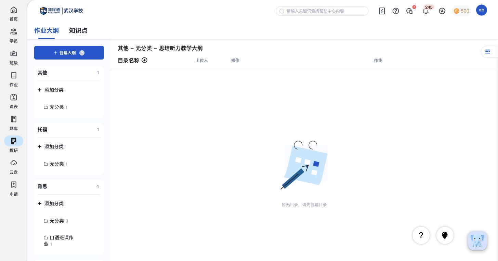

调研报告：教研功能结构与清单。本页保留逐次操作和截图，供追溯具体证据。
2026-10-23 · 教师端 · 30组功能观察
本页保留操作步骤与样例范围；功能结构与归纳清单请进入教研调研报告。
功能内容：左侧按科目分组，科目下是分类，分类内列出大纲名称；科目、分类旁展示数量，目录树可展开和收起；选中大纲后，内容区顶部显示科目、分类和大纲名称路径
实际操作：进入作业大纲，展开雅思→无分类，选择雅思听力（空窗期）TestTestTest。
说明：按实际页面记录；配置仅查看，未确认保存。

功能内容：创建大纲弹窗包含必填的大纲科目、大纲名称；科目下拉涵盖托福、雅思、SAT、AP、A-Level、IB及其他语言考试与课程；窗口提供确认和关闭入口
实际操作：打开创建大纲与科目下拉后关闭。
说明：未确认创建；不推定保存后默认目录和权限。
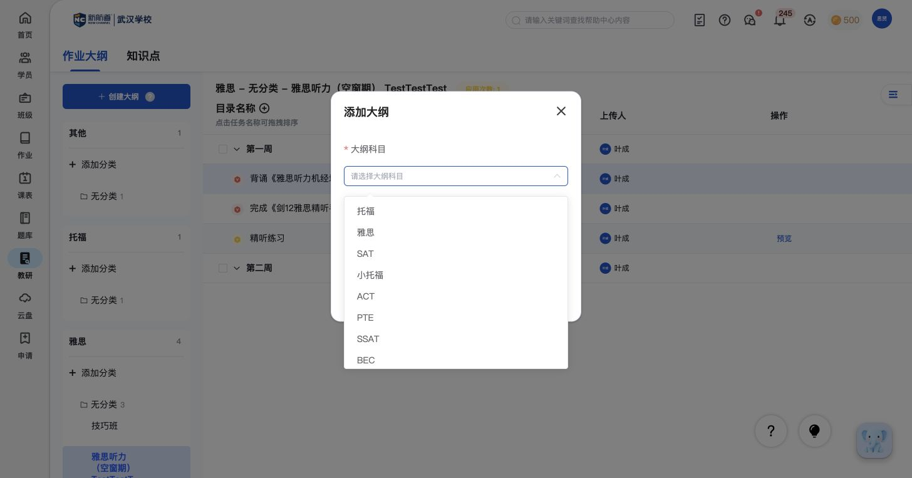
功能内容：科目下提供添加分类入口，打开编辑分类窗口；分类框可选择或输入，已选分类以标签显示；候选分类旁有编辑和删除图标，窗口提供确认与取消
实际操作：点击添加分类，展开候选分类，取消退出。
说明：只记录可见输入与管理入口；没有保存、改名或删除分类。
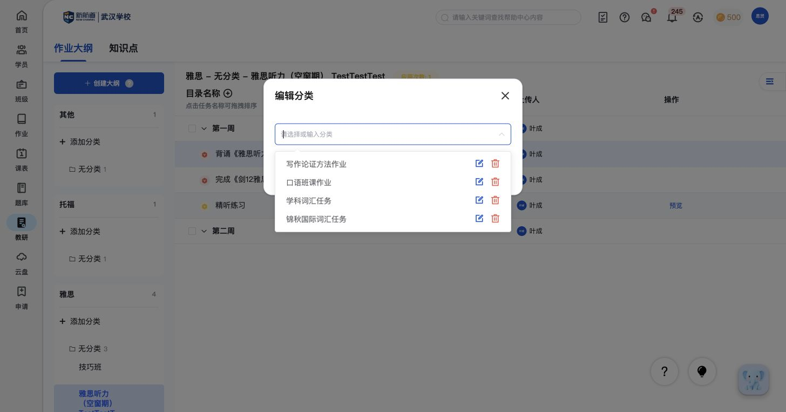
功能内容：目录可按第一周、第二周等名称组织，目录下列出任务；表格显示目录名称、上传人、操作；任务行有类型图标；顶部展示应用次数；这是计数展示，本次未出现应用对象明细
实际操作：阅读已有雅思听力大纲的两周目录、任务、上传人及应用次数。
说明：按实际页面记录；配置仅查看，未确认保存。
功能内容：目录名称旁的加号打开添加目录窗口，目录名称为必填；目录行有展开/收起与勾选框；页面明确标注任务名称可拖拽排序
实际操作：打开添加目录后关闭，临时勾选第一周后取消。
说明：未创建目录或拖动已有任务；不推定勾选后的批量动作或排序保存规则。
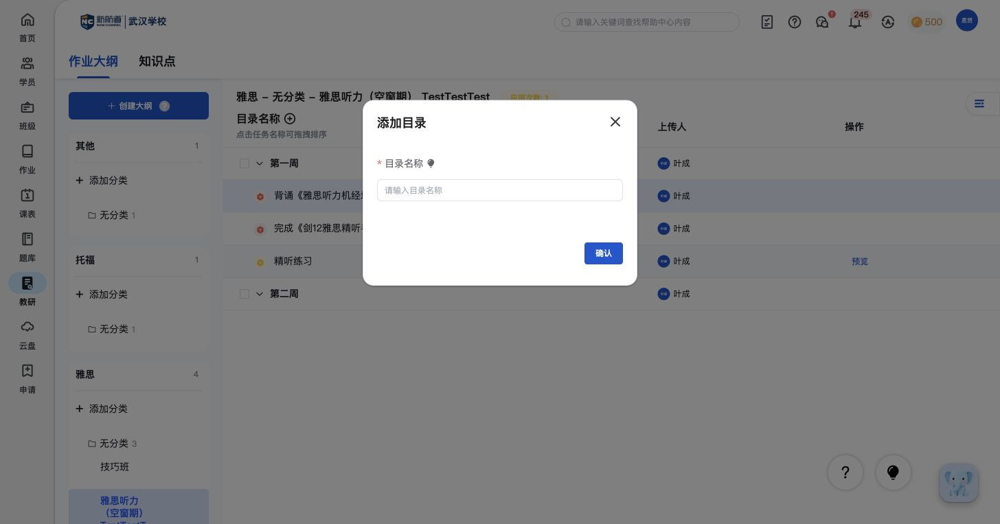
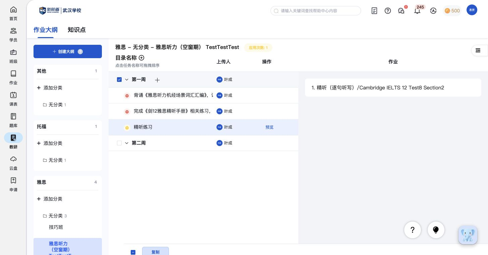
功能内容：右上角可展开或收起作业内容列；点击任务名称，右侧随之显示关联材料名称；课件样例显示PDF附件名，精听样例显示练习类型和题目路径
实际操作：展开右侧内容列，分别选择课件任务和精听练习。
说明：摘要中的PDF名称点击后未出现新预览；不据文件名推定此处有可用下载或阅读流程。
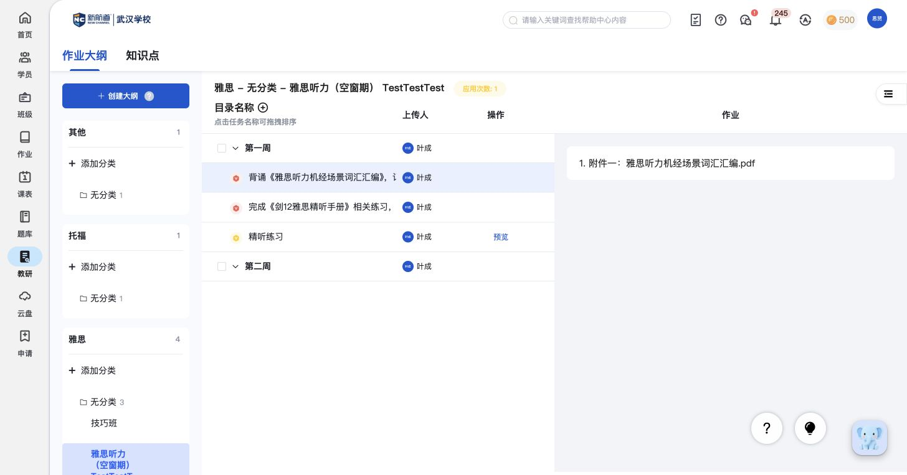
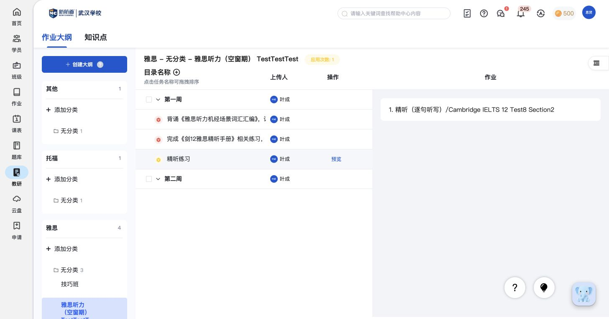
功能内容：任务名称为必填，提供100字计数；关联作业类型分为单词、作业、音视频、课件四类；关联按钮进入对应的资源选择器；底部确认完成任务配置
实际操作：打开第一周添加任务，逐个切换四种类型。
说明：本轮没有确认关联或保存任务，未影响已有大纲内容。
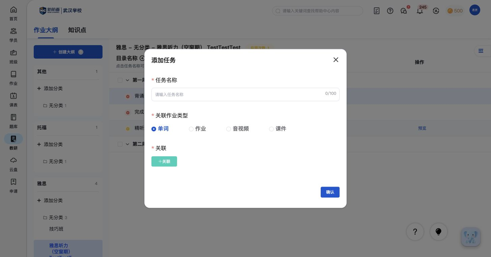
功能内容：单词类型进入只有基础练习页签的选择器；可按自有/系统来源与词库名称查找，右侧显示词库名称和词数；单词关联页可填写将词库分为几个单元，右侧箭头用于进入选用；有查看已选与确认关联
实际操作：进入单词关联，查看自有词库与单元数量字段。
说明：未输入单元数量、选择词库或确认关联，不推定自动切分规则。
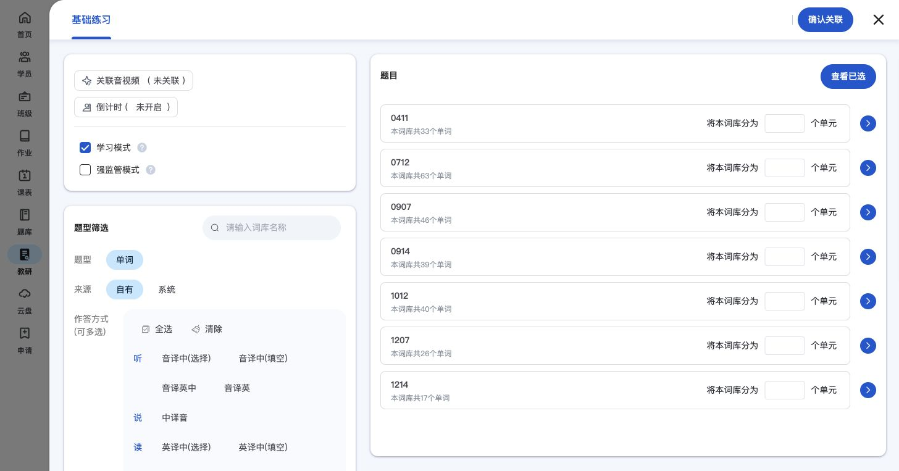
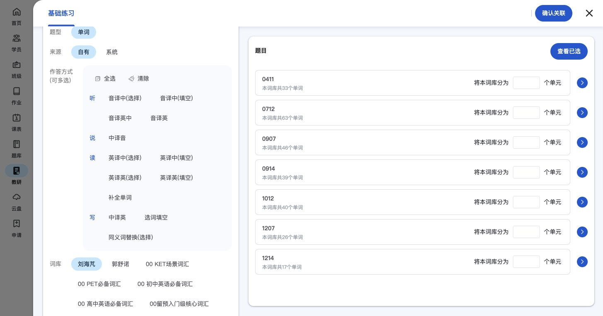
功能内容：作答方式可多选，并提供全选、清除；听：音译中选择/填空、音译英中、音译英；说：中译音；读：英译中选择/填空、英译英选择/填空、补全单词；写：中译英、选词填空、同义词替换选择
实际操作：滚动到作答方式完整区域，读取听说读写选项。
说明：完整截图覆盖此页13种选项；不将其数量当作整个产品的全部词汇题型。
功能内容：单词关联页提供学习模式，当前默认勾选；另有强监管模式与倒计时开关入口；可关联音视频作为补充材料
实际操作：查看词汇关联页左侧规则面板。
说明：只记录模式和配置入口，未推定监管具体机制、计时细则或学生端效果。
功能内容：作业类型进入基础练习、题型训练、模考测试、机构题库、自定义作业五个页签；右上角确认关联，选择内容后返回任务配置；基础练习中还可选单词、读、听、写、说；词库行可指定从第几个单词开始和本次词数
实际操作：选择作业关联，查看基础练习及其余页签。
说明：这里的五个页签是关联作业的编辑方式，与外层四种关联类型分层说明；未确认关联。
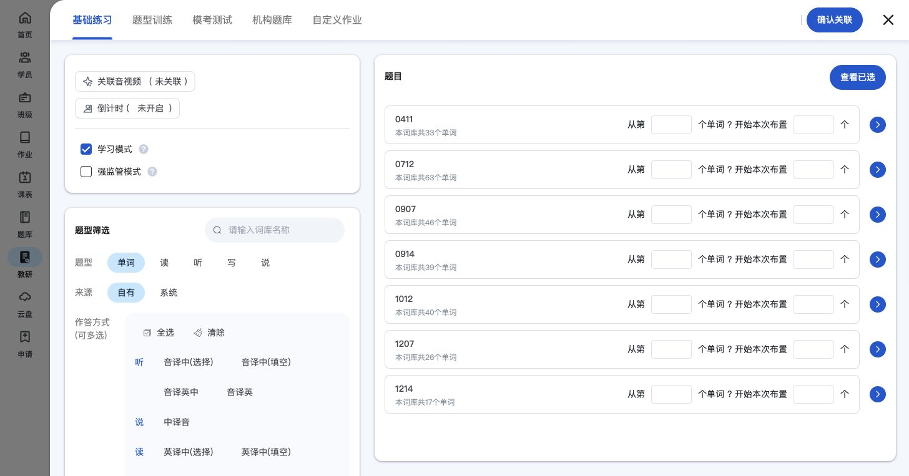
功能内容：按听力、阅读、写作、口语分项筛选，再按知识点缩小范围；列表显示题目路径、正确率和更新时间；提供排序、重置、搜索、全选、查看已选和分页；可配置倒计时、结果页不显示答案、强监管及关联音视频
实际操作：进入题型训练，等待资源加载，查看雅思听力题型与列表。
说明：题目资源已经加载；没有选题或改动规则。
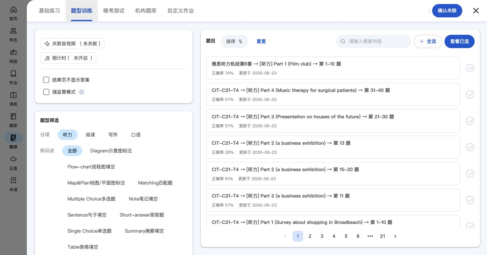
功能内容：布置方式为组卷、整套；可按分项、来源和话题找材料；题目列表支持排序、搜索、全选、已选管理与分页；提供倒计时结束禁止答题、结果页不显示答案、强监管配置
实际操作：进入模考测试，查看雅思来源与试题列表。
说明：只记录模考关联页可见配置，未提交模考任务。
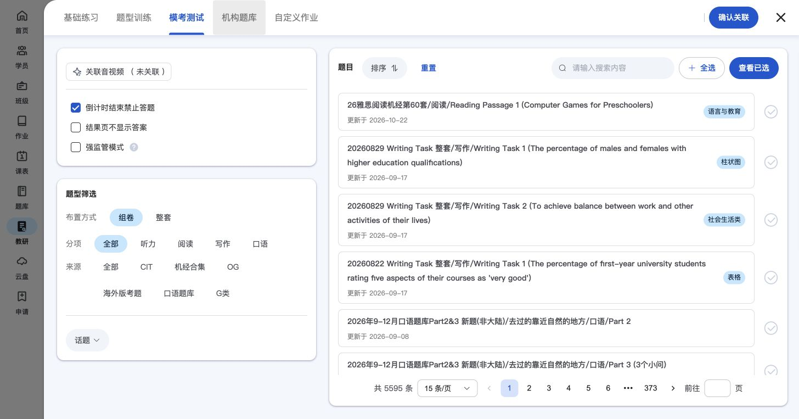
功能内容：可选组卷布置，或整套布置（页面注明可分数换算）；按科目、题型、知识点类型、交互类型和难度筛选；交互类型可见单选、多选、填空、简答、写作、口语、逐句精听、篇章跟读、长难句；另有显示口语原文、隐藏结果答案、倒计时和强监管配置
实际操作：切换机构题库，查看A-Level试卷与展开的题目。
说明：本页筛选出现长难句；不据此补写上一章未见的独立录题类型。
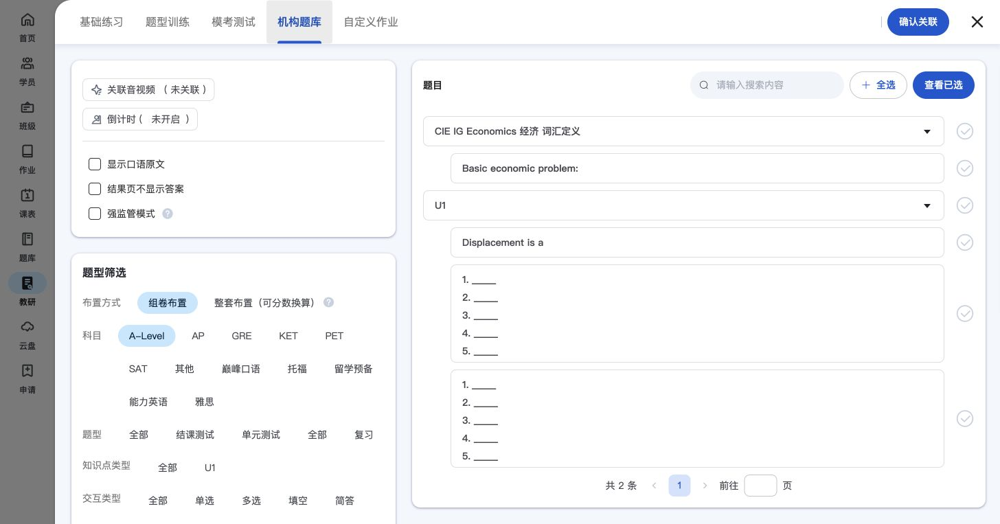
功能内容：可填写作业名称和富文本详情，标题上限100字符；可开关倒计时，并添加本地或云盘附件；页面提示普通附件不超过50M、视频不超过300M，最多9个；提供历史存档和添加答题卡入口
实际操作：进入自定义作业，读取标题、详情、计时与附件区域。
说明：没有填写或上传，历史存档本轮只记录入口。
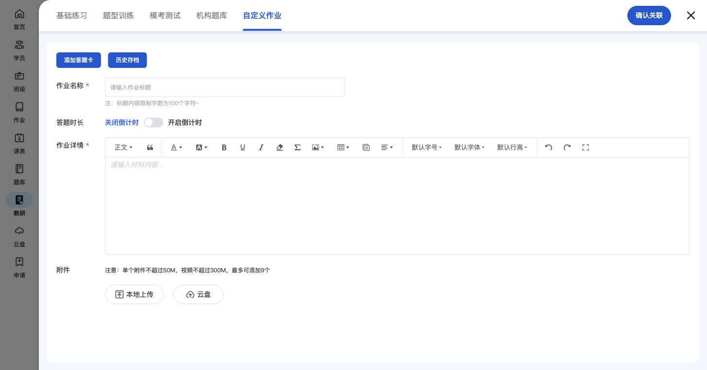
功能内容：答题卡可添加单选题、多选题、填空题、写作题、口语题；另有Excel上传入口；弹窗显示答题卡内容区域，提供确认与取消
实际操作：打开添加答题卡，读取类型后取消。
说明：未新增答题卡或上传Excel；题目字段的更深入说明见作业章节，此处不借旧内容补写新页面。
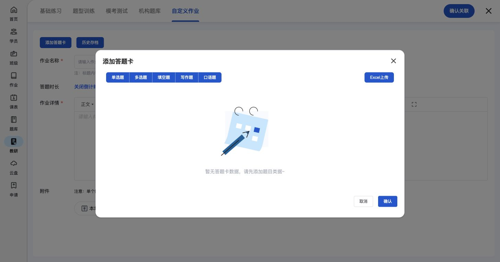
功能内容：资源窗口区分我的云盘和共享云盘；有上传入口，页面提示最大支持500M文件；文件列表显示名称、大小、时间，提供分页、跳页与确认/取消；本次共享资源能看到已有MP3文件
实际操作：选择音视频类型，打开关联窗口并切换共享云盘。
说明：未上传、选定文件或确认关联，不将提示的文件上限推定为全部场景统一限制。
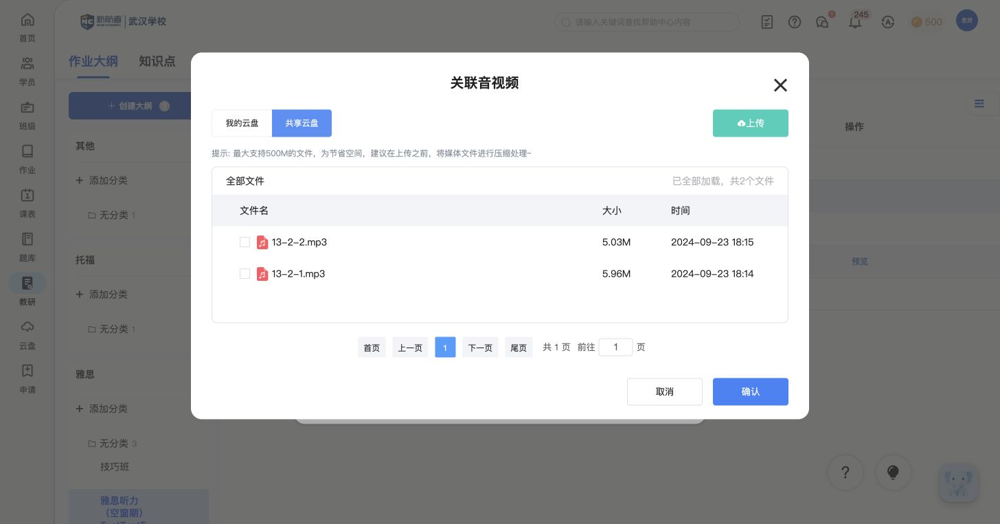
功能内容：课件使用单独的关联窗口，同样区分我的/共享云盘；共享列表可见PDF文件的名称、大小、时间；可分页浏览、上传或确认/取消选择
实际操作：选择课件类型并切换共享云盘，查看已有PDF。
说明：没有上传或关联文件；学生如何阅读、完成和回流留后续学生端。
功能内容：练习任务行的预览菜单分为答题预览和结果页预览；答题预览新开页面，展示作业名称、题型、建议时长和题目数量；示例提供开始做题按钮
实际操作：从精听练习进入答题预览，记录后关闭预览页。
说明：本轮只查看预览首页，没有开始作答或提交。
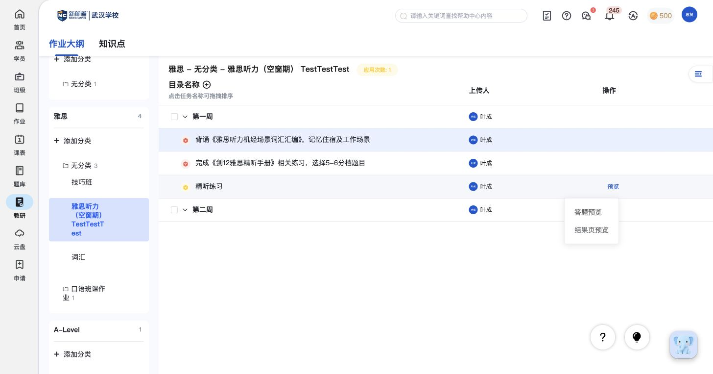
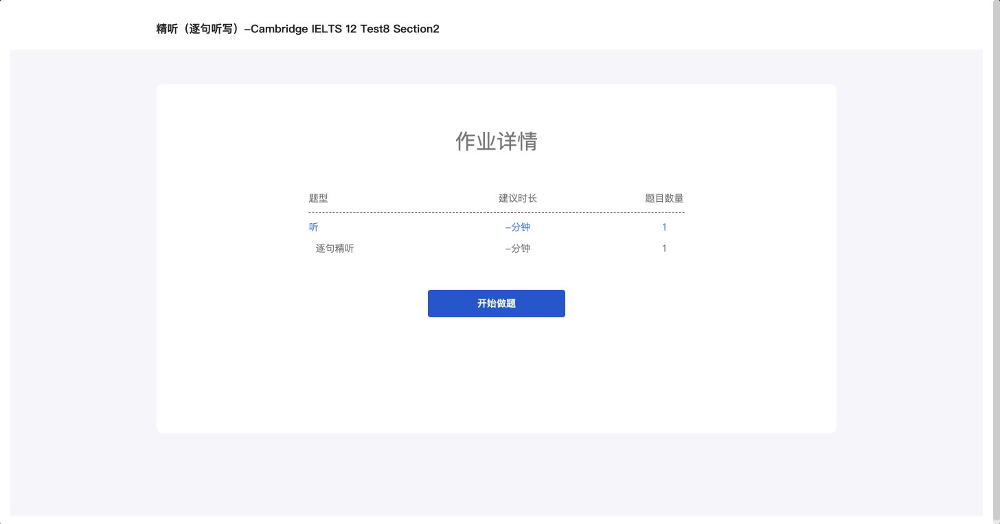
功能内容：结果预览显示作业结果、答题解析、答题录屏三个页签；作业结果区包含得分/满分、正确率、上一次正确率；统计区列出题目总数、答对、答错、未答
实际操作：打开精听任务结果页预览，读取显示框架后关闭。
说明：预览当前无真实作答值；不据空值认定统计缺失，也不当作真实学员结果。
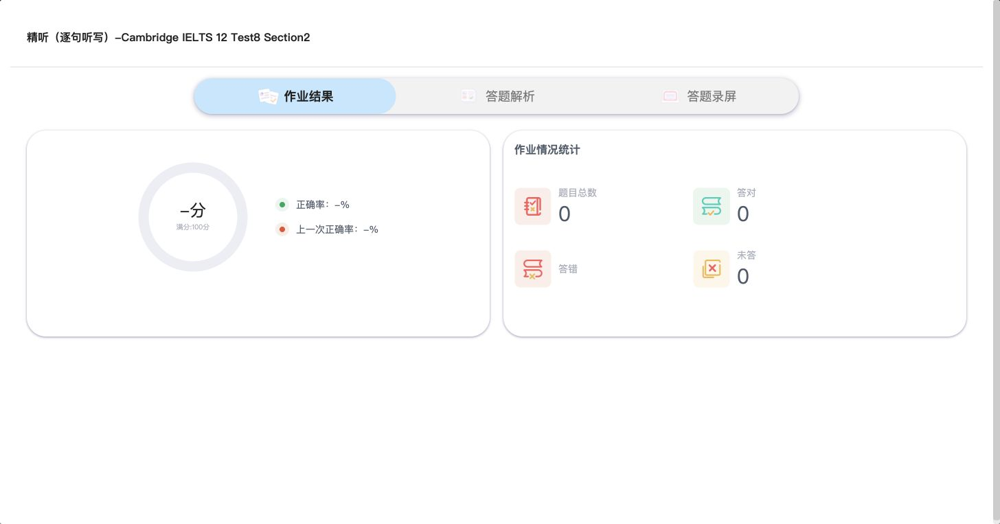
功能内容：知识点下设我的知识点、共享知识点；个人样例展示托福知识点，共享样例展示A-Level/U1内容；两页保留科目、类型、展示方式与名称查找工具
实际操作：分别进入个人与共享知识点列表。
说明：可用科目与类型按当前资源展示，不将共享样例只有A-Level解释为产品只支持该科目。
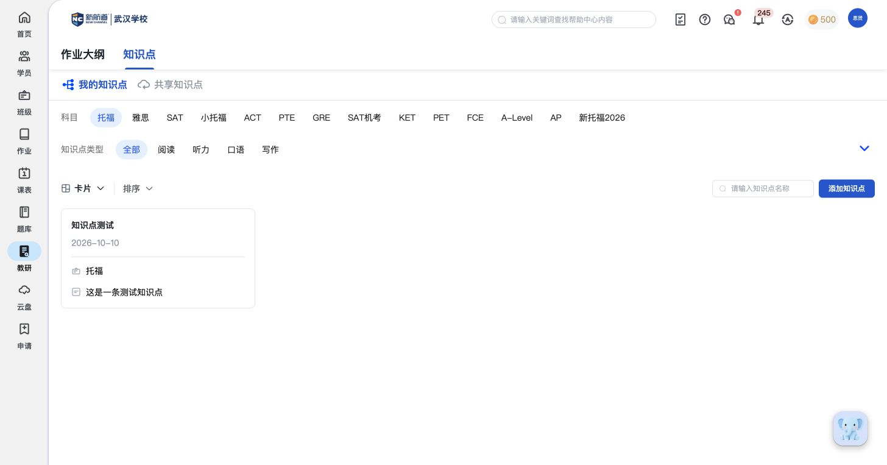
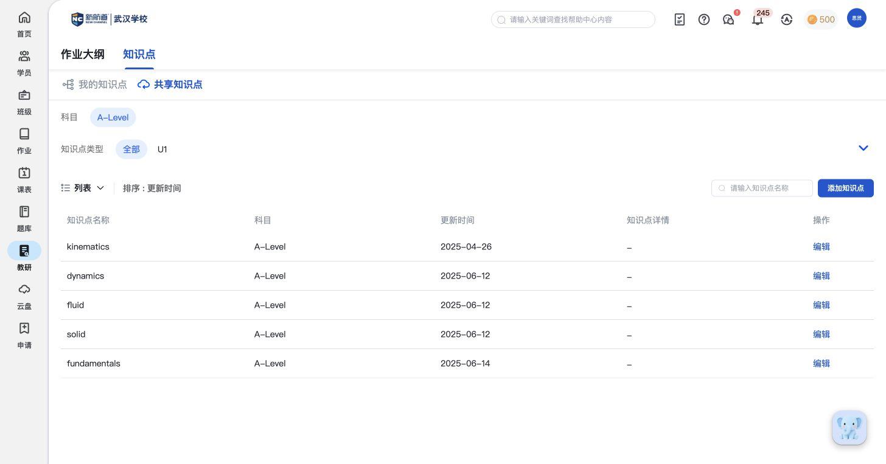
功能内容：个人页显示托福、雅思、SAT、小托福、ACT、PTE、GRE、SAT机考、KET、PET、FCE、A-Level、AP、新托福2026；托福知识点类型有全部、阅读、听力、口语、写作；共享A-Level样例使用全部、U1，表明类型随科目资源呈现
实际操作：阅读个人托福与共享A-Level的筛选项。
说明：记录实际选项，不推定各科目完整类型字典。
功能内容：卡片显示知识点名称、日期、科目和详情摘要；列表列为知识点名称、科目、更新时间、知识点详情、操作；列表提供条目编辑入口
实际操作：打开卡片/列表菜单，并切到列表。
说明：按实际页面记录；配置仅查看，未确认保存。
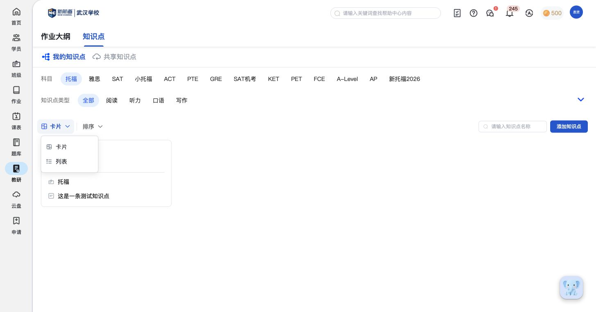
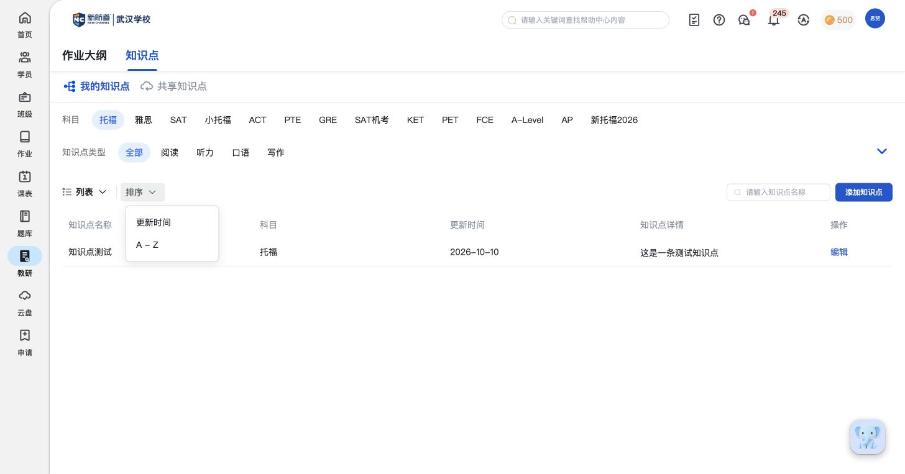
功能内容：搜索框按知识点名称查找，输入后有清除入口；排序菜单含更新时间、A-Z，并显示顺序箭头；选择排序后，按钮展示当前排序项
实际操作：展开排序并选择更新时间；输入知识点测试执行搜索。
说明：按实际页面记录；配置仅查看，未确认保存。
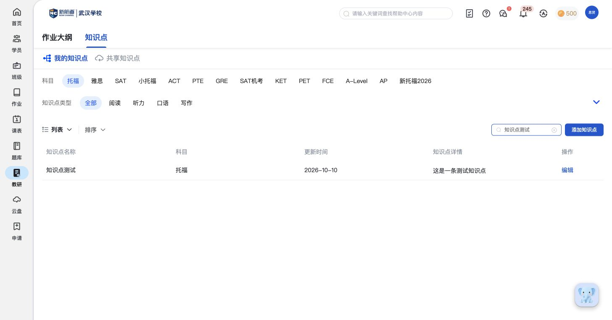
功能内容：添加时科目、知识点类型、名称、详情为必填；科目和类型可选择；托福新建类型下拉为阅读、听力、口语、写作；共享给其他老师可选是/否，新建样例默认为否；名称上限100字，右上角保存；已有个人条目编辑时科目和类型显示禁用
实际操作：打开新增表单及类型下拉，再查看已有个人知识点编辑。
说明：未新建、保存或更改共享范围。
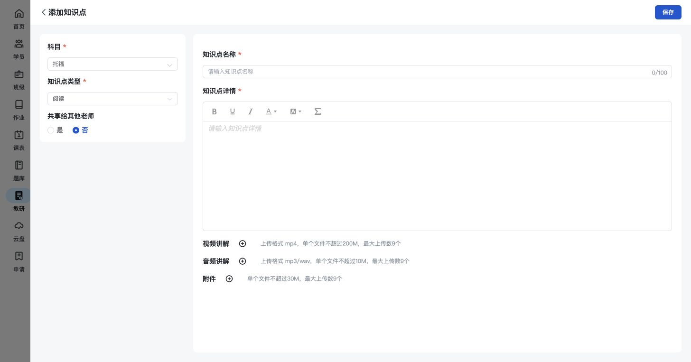
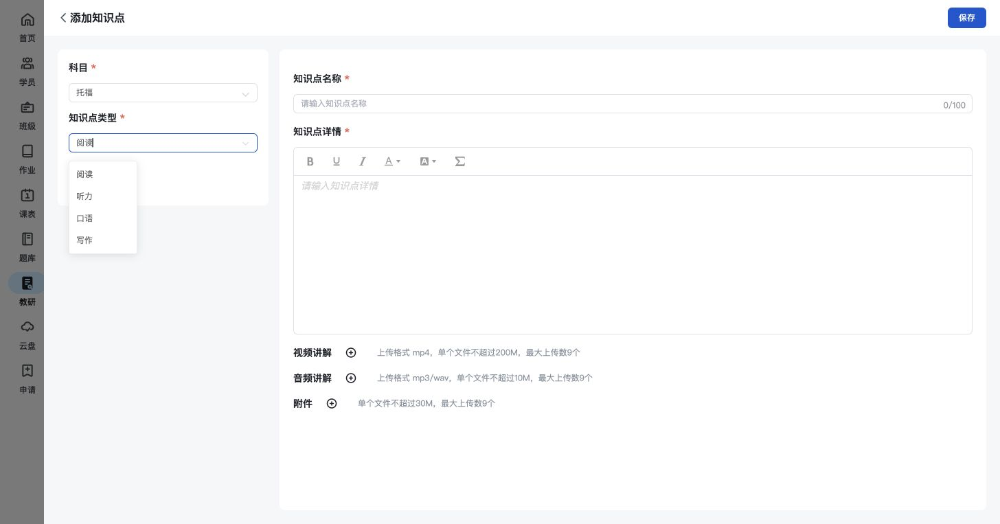

功能内容：详情编辑区有1000字计数；工具栏包含加粗、下划线、斜体、文字颜色、背景颜色；还有插入公式入口
实际操作：查看新增知识点的富文本工具栏与公式提示。
说明：仅查看工具；未成功展开公式编辑窗口，不补写公式配置细节。
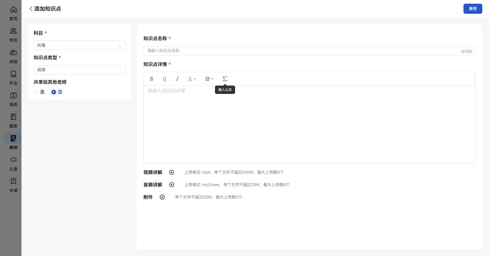
功能内容：视频讲解支持mp4，单个文件不超过200M，最多9个；音频讲解支持mp3/wav，单个文件不超过10M，最多9个；已有个人知识点可见音频文件名与播放器
实际操作：阅读新增页媒体提示，并查看个人条目已有音频。
说明：没有上传或移除媒体；格式和容量按此页面提示记录。
功能内容：独立附件区有添加入口；页面标注单个文件不超过30M，最多9个
实际操作：阅读知识点表单下方附件说明。
说明：没有上传附件，未见完整格式列表，不自行列举。
功能内容：共享列表样例行标为编辑，打开后标题实际为查看知识点；所选kinematics样例的科目、类型、名称、共享选项均禁用；该查看页未显示保存按钮
实际操作：从共享kinematics行点击编辑，查看实际只读页面。
说明：只描述当前条目的实际状态，不从一个样例推定所有角色或所有共享内容的权限。
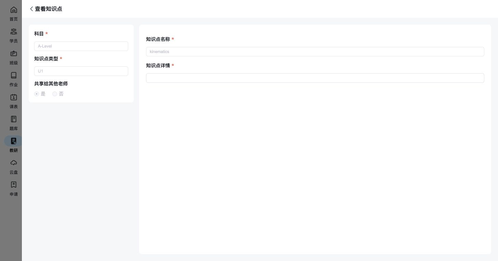
功能内容：播放器显示文件名、时长和播放进度，可调进度与音量；提供后退10秒、前进10秒与倍速；倍速选项为0.5、0.75、正常、1.25、1.5、1.75、2；已有文件行还显示下载图标
实际操作：查看已有4分26秒音频并展开倍速菜单。
说明：未实际下载或完整播放；按已见控件说明功能，不评价播放稳定性。
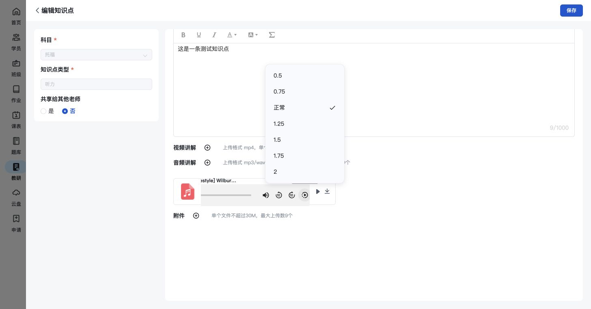